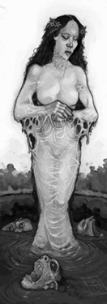

El Umbral de Arcadia
Eliseo ap Liam: 2003 - 2008
Eliseo ap Liam: 2003 - 2008
La Fría Corte del Espectro del Agua
(Dominio de la Corte del Otoño)

Localizada a lo largo de las orillas de muchos lagos y ríos de Escocia, las hadas de esta corte se mantienen alerta ante la posibilidad de que su presencia se pueda hacer evidente a los humanos. Conocidos localmente como los Fideales, cuentan con una siniestra reputación entre todo tipo de viajeros. Compuesta casi exclusivamente por changelings y sus padres primonatos, estas gráciles y evocadoras criaturas atraen a los humanos errantes a una muerte acuática. La mayor parte presentan la apariencia de un hombre o de una mujer esbeltos, con la piel teñida del mismo tono de las aguas en las que habitan, y todo el pelo de su cuerpo constituido por viscosas plantas de lago o algas.La corte en sí, a pesar de su siniestra reputación, adora sinceramente a la humanidad. Es la lujuria que sienten por los humanos lo que lleva a estas hadas, de manera tan inevitable como que el sol se levante cada día, a salir a las orillas de los lagos los ríos a cantar canciones de amor tristes y etéreas con la esperanza de atraer a un compañero.
Es frecuente que muchos amantes humanos perezcan durante o después de emparejarse con ellas. Las hadas de esta corte son conocidas por su voluble lujuria, y los huesos de muchos hombres y mujeres descansan en el fondo de docenas de lagos escoceses; como restos, al fin y al cabo, de amores desechados.
Aunque durante estos últimos días de la Tregua del juramento no se muestran totalmente apáticos, los miembros de la Fría Corte del Espectro del Agua están poco interesados en luchar en esta eterna batalla, y mucho más intrigados con la posibilidad de forjar nuevos juramentos de lujuria y amor; y tal vez incluso con la posibilidad de crear una relación de dependencia mutua con los humanos de la zona.
Aportado Eliseo ap Liam